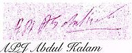

11th President of India
In office
25 July 2002 - 25 July 2007
Prime Minister: Atal Bihari Vajpayee
Manmohan Singh
Vice President: Krishan Kant
Bhairon Singh Shekhawat
Preceded by: K. R. Narayanan
Succeeded by: Pratibha Patil
Personal detail
Born: Avul Pakir Jainulabdeen Abdul Kalam
15 October 1931
Rameswaram, Ramnad District, Madras Presidency, British India
(now in Ramanathapuram District, Tamil Nadu, India
Died: 27 July 2015 (aged 83)
Shillong, Meghalaya, India
Cause of death: Cardiac arrest (Stroke)
Nationality: Indian
Alma mater: St. Joseph's College, Tiruchirappalli
Madras Institute of Technology
Profession: Professor, Author, Aerospace scientist
Religion: Islam
Awards: Bharat Ratna 1997, Padma Vibhushan 1990, Padma Bhushan 1981
Signature:
